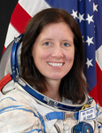

Lyndon B. Johnson Space Center
Houston, Texas 77058
|
National Aeronautics and Space Administration Lyndon B. Johnson Space Center Houston, Texas 77058 |
 |
Biographical Data |
||
SHANNON WALKER (PH.D)
NASA Astronaut
PERSONAL DATA: Born June 4, 1965 in Houston, Texas. Married to astronaut Andy Thomas. Recreational interests include cooking, soccer, running, weight training, flying, camping, and travel. Her mother, Sherry Walker, resides in Boerne, Texas. Her father, Robert Walker, is deceased.
EDUCATION: Graduated from Westbury Senior High, Houston, Texas, in 1983; received a Bachelor of Arts degree in Physics from Rice University in Houston, Texas in 1987; received a Masters of Science and a Doctorate of Philosophy in Space Physics from Rice University in 1992 and 1993, respectively.
ORGANIZATIONS: Aircraft Owners and Pilots Association; The Ninety-Nines International Organization of Women Pilots.
SPECIAL HONORS: Goethe Institute Scholarship for Study Abroad, Rice Fellowship for Graduate Study, Rockwell Sustained Superior Performance Award; seven Group Achievement Awards for work in the International Space Station (ISS) Program; three Going the Extra Mile Awards for work in the ISS Program; a Space Flight Awareness Award for contributions to the ISS Program; and nine Performance Bonus Awards.
NASA EXPERIENCE: Dr. Walker began her professional career with the Rockwell Space Operations Company at the Johnson Space Center in 1987 as a robotics flight controller for the Space Shuttle Program. She worked several Space Shuttle missions as a flight controller in the Mission Control Center, including STS-27, STS-32, STS-51, STS-56, STS-60, STS-61, and STS-66. From 1990 to 1993, Dr. Walker took a leave of absence from the Johnson Space Center to attend graduate school, where her area of study was the solar wind interaction with the Venusian atmosphere. In 1995, she joined the NASA civil service and began working in the International Space Station (ISS) Program at the Johnson Space Center. Dr. Walker worked in the area of robotics integration, working with the ISS International Partners in the design and construction of the robotics hardware for the Space Station. In 1998 she joined the ISS Mission Evaluation Room (MER) as a manager for coordinating on-orbit problem resolution for the International Space Station. In 1999, Dr. Walker moved to Moscow, Russia to work with the Russian Space Agency and its contractors in the areas of avionics integration for the ISS as well as integrated problem solving for the ISS. She returned to Houston in 2000 after a year in Russia and became the technical lead for the ISS MER as well as the Deputy Manager of the On-Orbit Engineering Office. Prior to selection as an astronaut candidate, Dr. Walker was the Acting Manager of the On-Orbit Engineering Office.
Selected by NASA in May 2004, Walker completed Astronaut Candidate Training in February 2006. Her training included scientific and technical briefings, intensive instruction in Shuttle and International Space Station systems, physiological training, T-38 flight training, and water and wilderness survival training. Dr. Walker is qualified to fly aboard the Space Shuttle and the International Space Station. She has also completed qualification in the Extravehicular Activity (EVA) Skills program and the Canadian Space Agency Mobile Servicing System (MSS) Robotics Operator (MRO) course.
Following her Astronaut Candidate Training, Dr, Walker assumed the duties as the crew support astronaut for the ISS Expedition 14 crew, which was on orbit for 215 day from September 2006 to April 2007. As a crew support astronaut she was the primary contact for all crew coordination, planning, and interactions, and was the primary representative for the crew while they were on orbit. In addition, Dr. Walker was assigned as a Spacecraft Communicator (CAPCOM) in the Mission Control Center in Houston. In that role, she was the primary communication link between the crew on the Space Station and the ground support team. Her work as a CAPCOM culminated in her assignment as the lead Space Station CAPCOM for the STS-118 Shuttle mission which docked with the Space Station and carried out four EVAs and added the S5 truss to the Station.
In the Summer of 2007, Dr. Walker began training for a long duration flight on the International Space Station. Initially assigned as a backup Expedition 19 crewmember, as a backup crewmember for Expedition 21/22 and a primary crew member for Expedition 24/25.
Dr. Walker launched and served as flight engineer (co-pilot) of Russian Soyuz spacecraft, TMA-19, on June 15, 2010 for a long duration mission aboard the International Space Station. She again served as a Flight Engineer during landing, which occurred November 25, 2010. The entire mission lasted 163 days, 161 of them aboard the Station.
DECEMBER 2010